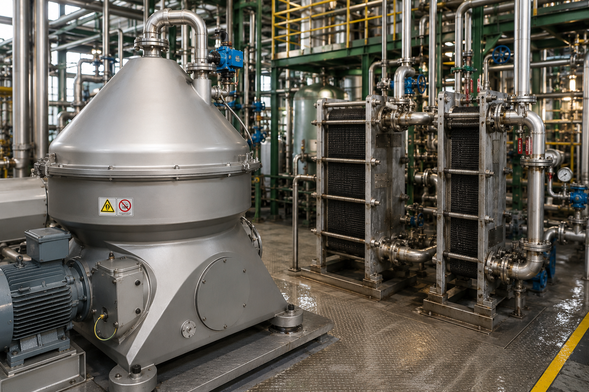

La línea utilizaba un proceso de Nanoneutralización para el desgomado de aceite, cuya reacción se desarrollaba aproximadamente a 65 °C. Esta condición, necesaria para proteger componentes del sistema de bombeo, limitaba la temperatura disponible en la etapa posterior de separación.
En determinadas materias primas de mayor complejidad, esta condición podía afectar el desempeño de la separación y generar problemas para alcanzar los niveles de fósforo requeridos. A partir de esta situación se identificó la posibilidad de incrementar la temperatura del aceite antes de la separación, aprovechando intercambiadores de calor existentes en la planta.
Mejorar el desempeño de la separación de fósforo mediante el incremento controlado de la temperatura del aceite hasta aproximadamente 85–90 °C, reutilizando equipamiento existente y desarrollando las modificaciones necesarias para lograr una operación automatizada y segura, evitando una inversión significativa en nuevos equipos.
El proyecto contempló la elaboración de la ingeniería conceptual de la modificación, incluyendo la definición de la nueva configuración de proceso, las líneas de conexión y la integración de dos intercambiadores de calor existentes.
La funcionalidad de los equipos fue validada conjuntamente con el área de Gestión de Activos y los proveedores, mientras que la nueva condición de operación fue consultada con Desmet, tecnólogo del proceso de Nanoneutralización, para verificar su compatibilidad con el sistema.
A partir del conocimiento de los equipos disponibles y de sus funciones anteriores, se planteó su reutilización como alternativa frente a la incorporación de nuevos activos. También se definió la desvinculación de los intercambiadores de su configuración anterior y las modificaciones necesarias sobre las líneas existentes.
En paralelo, se definieron las variables de proceso, condiciones de actuación y seguridades requeridas para la automatización. El nuevo sistema utiliza un transmisor de temperatura existente y una válvula modulante de vapor para controlar automáticamente la temperatura, incorporando además nuevas alarmas de seguridad.
La ejecución se desarrolló realizando la mayor parte de ingeniería con la planta en operación y dejando las conexiones finales para realizar en la parada anual programada de la planta.
Participé en la ingeniería conceptual, definición de modificaciones de proceso y líneas, evaluación de reutilización de equipos, coordinación técnica con proveedores y tecnólogos, definición funcional de variables y seguridades para la automatización y seguimiento de ejecución.
| Capacidad de línea | Incremento de temperatura | Intercambiadores reutilizados | Mejora en la reducción de fósforo? |
|---|---|---|---|
| 250 TPD | 65 → 80/90 °C | 2 | Sí, reduciendo la necesidad de ácido fosfórico |
La modificación permitió mejorar el desempeño de la separación de fósforo, particularmente frente a materias primas de mayor complejidad, y mantener la operación de la línea bajo la nueva condición térmica y logrando las reducciones en la utilización de ácido fosfórico, ventaja propia del proceso de Nanoneutralización.
La reutilización de los intercambiadores existentes permitió implementar la mejora sin una inversión significativa en nuevos equipos, mientras que la automatización incorporó mayor estabilidad y seguridad al control de temperatura.
El sistema continúa actualmente operativo con esta configuración.